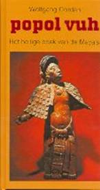
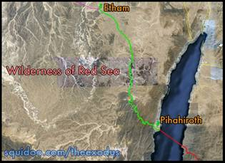
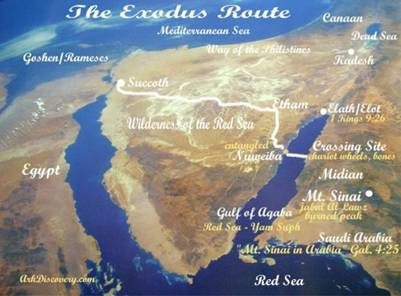
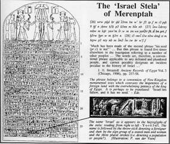
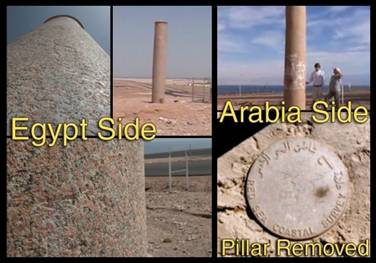
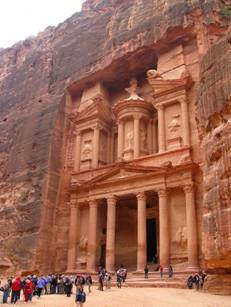
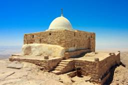
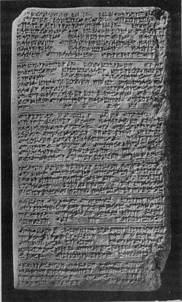
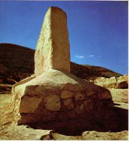

Exodus
Door:
Franklin ter Horst (Aangemaakt: mei 1996) ( Laatste bewerking: 23 september 2019)
Eeuwenlang diende de Bijbel
als een geschiedenisboek voor vele ontdekkingsreizigers, archeologen en
historici. Maar in de jaren zestig en zeventig kwam een nieuwe stroming op in
de academische wereld, die meent dat de Bijbel geen gezag heeft op het gebied
van geschiedenis en archeologie. Het zou niet mogelijk zijn om geschiedenis te
leren uit de Bijbelverhalen, en het merendeel van de verhalen zou niet waar
zijn of vervormd door auteurs uit veel latere periodes. Deze stroming beweert,
dat je niet kunt vertrouwen op een traditie van 2500 jaar, tenzij je duidelijk
bewijs hebt op archeologisch gebied. Omdat er geen archeologisch bewijs was van
de Exodus, of van de aanwezigheid van het volk Israël in het land Israël, dan
is het niet gebeurd, en het moet een sprookje zijn. Dit was en is nog steeds de
dominante houding van de academische wereld.
Na de Zesdaagse Oorlog in
1967, toen Israël de Bijbelse gebieden Judea en Samaria weer in bezit heeft
gekregen, zijn diverse Israëlische archeologen begonnen met opgravingen in deze
gebieden en zijn er een hele serie opmerkelijke ontdekkingen gedaan die de
verhalen in de Bijbel bevestigen.
Met Pesach vieren de Joden de Uittocht uit Egypte, maar lang niet iedereen gelooft dat dit echt is gebeurd. In oktober 1999 meldde Ze,ev Herzog, hoogleraar archeologie aan de Universiteit van Tell Aviv dat het Oude Testament voor een groot deel bestaat uit mythen en legenden. Herzog beweerde dat na zeventig jaar gedegen onderzoek was gebleken dat de Joden nooit slaven in Egypte zijn geweest en dat het verhaal over de veertigjarige tocht door de woestijn ook niet waar is. Ook zouden de Israëlieten het land Kanaän niet hebben veroverd en zouden David en Salomo slechts koning zijn geweest over piepkleine koninkrijkjes. De beweringen van Herzog maakten zoveel indruk dat de toenmalige minister van Onderwijs in Israël, Jossi Sarid vond dat de bevindingen van Herzog op de scholen als verplichte leerstof diende te worden ingevoerd. De historicus Jehoshiua Porat noemde de bevindingen een nieuwe nagel aan de doodskist van de valse joodse overtuiging dat het judaïsme 3000 jaar onveranderd heeft bestaan in Israël De praktijk leert dat in toenemende mate gezaghebbende personen, waaronder ook vooraanstaande christenen het bijbelse woord naar het rijk der mythen en legenden verwijzen. Zij stellen het recht van het Joodse volk op het land Israël ter discussie en brengen grote aantallen gelovigen, zowel Joden als christenen aan het twijfelen over het waarheidsgehalte van de Bijbel.
We leven in een tijd waarin velen het onderscheid niet meer zien tussen licht en duisternis. Archeoloog Herzog kreeg gelukkig niet alleen maar bijval, religieuze Joodse leiders en andere Israeliërs die Gods Woord bewaren, weigerden de wetenschappelijke conclusies van Herzog en de zijnen te accepteren en dat is logisch want Gods Woord is gezaghebbend en waarheidsgetrouw. Pogingen het verhaal van de Exodus naar het rijk der fabelen te verwijzen zijn echter bepaald niet nieuw. Eerder kwamen een aantal "geleerden " ook al tot de conclusie dat dit deel van de Bijbel niet veel meer was dan een soort Roman. Onder de deelnemers bevonden zich Jean Leclant, hoogleraar Egyptologie aan de Universiteit van Sorbonne in Frankrijk, Shafik Allam, lector aan de Universiteit van Tübingen en Labib Caquot, Bijbel specialist. Een van de deelnemers verzekerde dat er in Egypte in de tijd waarin Mozes geleefd zou hebben, niet meer dan hooguit enkele Hebreeën in het land verbleven en dat die voortkwamen uit nomadenstammen van verschillende landaard. De deelnemers kwamen tot de slotsom dat het hele verhaal van de Exodus verzonnen moest zijn in de tijd van Salomo.
Deze dwaling werd verder onderbouwd met de opmerking dat de Egyptenaren die in het verleden gewag maakten van alles wat er in hun land gebeurde, zeker niet verzuimd zouden hebben iets te melden over de immense Uittocht onder leiding van een God en de wonderbaarlijke doortocht door de Schelfzee. De historische en traditionele archieven in Egypte bewaarden volgens de eerder genoemde "specialisten" echter een volledig stilzwijgen. De overwinning van God over de wateren diende uitsluitend symbolisch gezien te worden. Zo zouden het volk van Israël en de Bijbel, in diepere werkelijkheid, niet meer zijn dan kunstmatige vertelsels, gefabriceerd en verzonnen, net als de vele geschriften van andere volken en godsdiensten. Allemaal ontstaan in het brein van fantasten. De Bijbelse God Jahweh was al evenmin een werkelijkheid, zo zei men. De naam was ontleend aan de bedoeïenen in de woestijn. Er zou in Egypte een document zijn gevonden met daarop de naam "Yahwoh". Dit was echter niet een aanduiding voor een god maar een geografische naam gegeven aan een landstreek in Egypte waar de bedoeïenen van Yahwoh leefden.
Er is in de loop van de jaren een veelvoud aan hypotheses in omloop gekomen over het Exodusverhaal. Zo zou het zijn overgenomen uit het Soemerische Gilgamesj Epos en door Abraham zijn meegenomen op zijn tocht naar het land Kanaän waar het later aan de Hebreeuwse teksten zou zijn toegevoegd. Een ander verhaal is dat het zou zijn overgeschreven uit de geschiedenis van Fenicië wat is vastgelegd door Sanchoniaton, lang voordat de Hebreeën in het licht der geschiedenis traden. James Churchward, schrijver van het boek "Het verloren werelddeel Mu " zegt dat de gebeurtenis zich heeft afgespeeld in het oude land Lemuria wat tijdens de Zondvloed in de golven is verdwenen. De Lemuriaanse priesters de "Naäcals " zouden de gebeurtenis hebben opgeschreven en deze informatie zou later in bezit zijn gekomen van de Maya,s die het vervolgens zouden hebben opgeschreven in de "Popol Vuh" het heilige boek der Maya’s. Een citaat in dit boek maakt net als de Bijbel melding van een doortocht door een zee.
“Zij merkten nauwelijks
hoe zij de zee doorschreden. Zij liepen er doorheen als of er geen water
bestond. Uit het zand stegen ronde stenen op en over de rijen stenen schreden
zij er heen. Zij die de zich delende zee overschreden noemden de plaats
"Drijfzand ". Zo kwamen zij aan de overkant.”
Popol Vuh, het heilige boek der Maya’s
Bijbelcritici maken dikwijls dankbaar gebruik van dit soort teksten om er de historiciteit van de Bijbel mee in twijfel te trekken. Maar de Popol Vuh tekst zou wel eens afkomstig kunnen zijn uit Hebreeuwse bronnen. Er zijn namelijk in zowel Midden als Zuid-Amerika Hebreeuwse inscripties gevonden daterend uit een tijd van voor Christus, lang voordat de Spanjaarden en anderen de overtocht naar dit deel van de wereld maakten. Niemand weet hoe deze inscripties daar terecht zijn gekomen.Ook heeft men vastgesteld dat er in de Quiche-Maya taal, die door indianen in Peru wordt gesproken, woorden bestaan die hetzelfde zijn als in het Oud-Hebreeuws.
In Ras-Sjamra, het vroegere Oegarit, heeft men een aantal kleitabletten gevonden met daarop gedichten die verwijzen naar een doortocht door de zee van "Jam Soef "onder leiding van een god met de naam El. Deze tabletten zouden dateren uit ca 1250 v.Chr. Hieruit blijkt dat ook de Kanaänieten een verhaal over een doortocht kenden ,naar alle waarschijnlijkheid over genomen uit Hebreeuwse bronnen. Het verhaal over de uittocht van de kinderen van Israël is zonder enige twijfel een historische gebeurtenis wat wel degelijk bewezen kan worden.
De hele omschreven geschiedenis in Exodus begint met een schildering van de onderdrukking van de Israëlieten na de dood van Jozef. J.G.van der Land gaat er in het tijdschrift Bijbel, Geschiedenis en Archeologie vanuit dat farao Thoetmoses 1 (1493-1481v.Chr) waarschijnlijk degene was die begon met het onderdrukken van het volk van Israël. De Israëlieten die veel voorrechten hadden genoten tijdens de overheersing van Egypte door de Hyksos, werden door de Farao,s van de nieuwe dynastie gewantrouwd. Uit angst voor de potentiële macht van de alsmaar in aantal toenemende Israëlieten liet Farao hen zware slavenarbeid verrichten, en toen deze maatregel niet effectief genoeg bleek, beval hij alle pasgeboren jongetjes van Israël te doden. Volgens van der Land werd in deze situatie in 1482 v.Chr., Mozes geboren. De Egyptische prinses die hem korte tijd later redde zou Hatsjepsoet geweest zijn. Zij werd in ca 1500 v.Chr., geboren als dochter van farao Thoetmoses 1.
Mozes groeide op aan het hof van de farao in de omgeving van de knapste mannen van Egypte. In Handelingen 7:22 staat dat hij werd onderwezen in alle wijsheid der Egyptenaren en dat hij machtig was in woorden en werken. Ondanks zijn hoge positie weigert hij door te gaan voor een zoon van farao,s dochter en te profiteren van de schatten van Egypte. Op veertig jarige leeftijd kwam het in zijn hart op, naar zijn broeders, de kinderen van Israël, om te zien. Na een Egyptenaar te hebben omgebracht vlucht hij naar Midian (het huidige Saoedi-Arabië) waar hij trouwt met Zippora, de dochter van Jethro, de priester van Midian.
Toen er veertig jaren verstreken waren verscheen hem in de woestijn bij de berg Gods, Horeb, een Engel des Heren als een vuurvlam midden uit een braamstruik, en kreeg hij van God de opdracht de kinderen van Israël uit Egypte te leiden.
Volgens Exodus achtte Mozes zich bepaald niet geschikt om het volk uit Egypte te leiden gezien zijn reactie.
Exodus 4:10 “Toen
zeide Mozes tot de Here: Och Here, ik ben geen man van het woord noch sinds
gisteren, noch sinds eergisteren, noch sinds Gij tot uw knecht gesproken hebt,
want ik ben zwaar van mond en zwaar van tong.”
De Here wuift zijn bezwaren echter weg en spreekt hem moed in met de woorden. Ik zal met uw mond zijn en u leren wat gij spreken moet. Daarnaast stuurt God zijn broeder Aäron met hem mee als steun en toeverlaat en gezamenlijk brengen zij Gods bevelen over aan de darao. Deze wenst echter niet in te gaan op de diverse verzoeken van Mozes om het volk te laten gaan waarop een hele serie rampzalige als wonderbaarlijke gebeurtenissen volgt. De halsstarrige houding van de farao doet God besluiten het land Egypte te treffen met een tiental plagen die zich achtereenvolgens voltrekken.
Volgens een aantal deskundigen zou het bij een deel van de plagen kunnen gaan om een grote natuurramp in het gebied van de Middellandse zee. Zo ontdekte de Griekse professor Spyridon Marinatos, dat er zich tussen 1500 en 1300 v.Chr., een enorme vulkaanuitbarsting moet hebben voorgedaan op het eiland Thera, in de buurt van Kreta. Nieuwe onderzoeken hebben echter uitgewezen dat deze uibarsting in 1625 voor Chr., heeft plaatsgevonden. (Informatie afkomstig uit het boek Climax Atlantis). De gevolgen van deze uitbarsting zouden niet alleen Thera en Kreta getroffen hebben maar ook een deel van de landen rond de Middellandse zee en dan met name Egypte. De uitbarsting veroorzaakte enorme aardbevingen in de regio waarbij tevens reusachtige aswolken en gloeiende lava de lucht in werden geslingerd.
Men ontdekte op de overblijfselen van het eiland Thera, het huidige Santorini, meters dikke aslagen. Er bestaan een aantal teksten die melding maken van deze ramp. Een van deze teksten werd ontdekt op een schrijn "naos" van zwart graniet die is gevonden in El Arisj, een stad op de grens van Egypte en Israël. Op deze schrijn zijn hiëroglyfen aangebracht waarvan een gedeeltelijke vertaling reeds in 1890 werd gepubliceerd. De steen is later overgebracht naar het museum van Ismailia waar een nieuwe poging werd gedaan de tekst in zijn geheel te vertalen. Sedert de ontdekking is deze schrijn maar zelden vermeld en de merkwaardige tekst erop is steeds als tamelijk mythologisch beschouwd, hoewel er koningen, residenties en geografische plaatsen worden genoemd. De namen van godheden, die in de tekst voorkomen zijn koninklijke bijnamen. In de enigszins verminkte tekst komen de volgende regels voor.
Het land was in grote
droefenis. Kwaad daalde op de aarde neer. Er was een grote beroering in de
residentie van de koning. Niemand verliet het paleis gedurende negen dagen, en
tijdens deze negen dagen van beroering stond er zo,n storm dat noch de mensen
noch de goden de gezichten van hun naasten konden zien. Het land viel ten prooi
aan vertwijfeling en ellende.
De vermelding van een
duisternis die een aantal dagen duurde staat ook in Exodus
Exodus 10:21-22-23 “Daarna
zeide de Here tot Mozes: Strek uw hand uit naar de hemel opdat er duisternis
zij over het land Egypte, zodat men de duisternis kan tasten. En Mozes strekte
zijn hand uit naar de hemel, en er was gedurende drie dagen een dikke
duisternis in het gehele land Egypte. Gedurende drie dagen kon niemand een
ander zien, noch van zijn plaats opstaan; maar alle Israëlieten hadden licht,
waar zij woonden.”
De tekst op de schrijn
verschilt van het verhaal in Exodus in zoverre dat er van negen dagen
duisternis wordt gesproken maar de rest van de tekst vertoond een opmerkelijke
gelijkenis. In de oude Joodse Midrasj geschriften wordt ook melding gemaakt van
deze duisternis. Hierin staat dat de duisternis zeven dagen duurde, dat men de
eerste drie dagen nog van plaats kon veranderen maar daarna niet meer. Het was
niet de duisternis van een maanloze donkere nacht, maar de duisternis
veroorzaakt door een felle storm vol fijne asdeeltjes. De duisternis kwam uit
de hel en was te voelen, aldus de Midrasj. Het geschrift vermeldt verder dat
steden in de duisternis werden verwoest waarbij vele doden vielen. De tekst op
de schrijn vermeldt verder dat Zijne majesteit van Sjoe, zijn troepen bijeen
riep en bevel gaf hem te volgen naar streken waar zij-naar hij beloofde- weer
het licht zouden zien.We zullen onze vader Ra-Harachti zien in de lichtende
streek van Bachit.
Een papyrustekst die bewaard wordt in de Ermitage in Sint-Petersburg in Rusland geeft ook een uiteenzetting van een ramp die zich in Egypte voltrekt:
“Het land is volkomen
verwoest er rest niets meer. De zon is versluierd en schijnt niet in de ogen
van de mensen. Niemand kan meer leven. De rivier is droog en de aarde is tot ellende
vervallen.”
Aan de Rode zee op het Arabisch schiereiland bestaan overleveringen die vertellen dat een geweldige vloedgolf het land overspoelde en dat de mensen door zware stormen werden weggeslingerd. De aarde beefde hevig en daaraan gingen diverse natuurverschijnselen vooraf. Het toneel van deze gebeurtenissen staat bekend onder de naam "Idam" wat razernij betekent. De Arabische schrijvers van dit verhaal waren zich niet bewust van enigerlei verband tussen hun verhaal en de omschreven rampen in het boek Exodus.
In een geschrift met de naam "Ipoewer" beschrijft een Egyptische ooggetuige een serie rampen die direct doen denken aan de Bijbelse plagen. Sommige deskundigen beweren dat dit geschrift niets met de Bijbelse plagen van doen heeft en ruim 400 jaar eerder zou hebben plaatsgevonden, maar de overeenkomsten zijn op z’n minst frapant te noemen. Dit geschrift is gevonden in Memphis in de omgeving van de piramide van Sakkara. In 1828 kwam de papyrus in het bezit van het museum van Leiden waar het in de catalogus staat vermeld als Leiden 1344. Het is een geschrift vol klaagliederen en een beschrijving van een ingrijpende natuurramp die vergezeld ging van aardbevingen en hevige stormen. De papyrus vertelt dat een uitzonderlijke krachtige westenwind zeven dagen duurde en dat al die tijd het land in een diepe duisternis gehuld was. Stofwolken kleurden het water rood als was het bloed en een alles verwoestende hagel sloeg enorme wonden in huid van mens en dier. De papyrus verhaalt de gebeurtenissen op de volgende wijze:
“Voorwaar, het land draait
rond als het wiel van een pottenbakker. De steden zijn verwoest. Opper Egypte
is dor geworden. Alles ligt in puin. De residentie is in een oogwenk
vernietigd. Er komt geen eind aan het rumoer. Pest heerst door het hele land.
Bloed is overal, zelfs de rivier is bloed. Mensen huiveren het te drinken.
Menselijke wezens, dorsten naar water. Dit is ons water, ons geluk, wat zullen
we ten aanzien daarvan doen ? Alles is verwoesting, alle vissen zijn dood.”
Dit onheilspellend gebeuren ging gepaard met verterend vuur en dit vuur verspreidde zich over het hele land:
“Vuur schoot naar de
aarde. En terwijl er vuur door de hagelbuien heenflikkerde, hagelde het
buitengewoon zwaar. Voorwaar, poorten, zuilen en muren werden verteerd door
vuur. Beneden-Egypte weent. Het gehele paleis van de Farao is zonder zijn
inkomsten. Daartoe behoren tarwe en gerst, ganzen en vis. Voorwaar, het koren
is aan alle kanten vergaan. Alles is vergaan wat gisteren nog werd gezien. Het
land is aan zijn moeheid overgeleverd als afgesneden vlas.”
De melding dat de oogsten te velde in een enkele dag werden verwoest sluit droogte, de gebruikelijke oorzaak van een slechte oogst uit. Alleen hagel en vuur konden akkers hebben achtergelaten als na het afsnijden van vlas:
“Bomen zijn vernield.Geen
vruchten noch kruiden worden meer gevonden. Er heerst honger onder de overlevenden.
Alle dieren, hun harten wenen. Het vee kermt. Zie, het overgebleven vee heeft
zich verstrooid en er is niemand het te verzamelen. Voorwaar, de kinderen van
de prinsen worden op de straat gesmeten. Niemand aanschouwde de
doodsnood in de kerker, een kuil in de grond waarin gevangenen werden
opgesloten, toen deze kerker door aardbevingen werd dichtgegooid. De gevangenis
is verwoest. Het kermen dat door het land gaat is doortrokken van klaagzangen.”
De ongeborenen, klaagt Ipoewer, gingen het eeuwige leven binnen nog eer zij het licht van de wereld hadden aanschouwd. Zelfs zwangere vrouwen op het punt te baren, kregen een miskraam en stierven omdat de verwoester rondwaarde en al wat hij vond verwoestte. Wanneer men een aantal van de voorvallen uit de papyrus vergelijkt met de Bijbelse plagen dan ontdekt men de volgende overeenkomsten.
Papyrus 2:5-6 “Pest
heerst door het hele land. Bloed is overal.”
Exodus 7:21 en 9:5-6 “Er
was bloed in het gehele land Egypte. En al het vee van de Egyptenaren stierf door
de pest.”
Papyrus 2:10 “De
rivier is bloed. Mensen huiverden het water te drinken.”
Exodus 7:20 en 7:24 “En
al het water in de Nijl werd in bloed veranderd. Alle Egyptenaren echter
groeven in de omgeving van de Nijl naar water om te drinken, want Nijlwater
konden zij niet drinken.”
Papyrus ? “Alles is
verwoesting, alle vissen zijn dood.”
Exodus 7:21 “…de
vis in de Nijl stierf, zodat de Nijl stonk.”
Papyrus 6:1 “Vruchten
noch gewassen worden meer gevonden.”
Exodus 9:25 “De
hagel sloeg in het gehele land Egypte alles neer, wat op het veld was, van mens
tot dier; ook al het veldgewas sloeg de hagel neer.”
Papyrus ? “En
terwijl er vuur door de hagelbuien heenflikkerde hagelde het buitengewoon
zwaar.”
En zo zijn er nog een groot aantal overeenkomstige voorbeelden.Toeval is hier uitgesloten. Het Bijbelse verhaal over de tien plagen lijkt wel degelijk een historische gebeurtenis te zijn.
In Exodus 13 en 14 staat hoe Mozes door de Schelfzee trok en hoe de farao met zijn zeshonderd uitgelezen wagens alle volledig bemand in het water van de Schelfzee aan zijn eind komt. In Exodus 14:9-10 staat dat de farao en zijn legermacht de Israëlieten inhaalden aan de zee bij Pi-Hachiroth. In de Egyptische bronnen staat dat de farao een plaats bereikte genaamd Pi-Charoti (Nuweiba). Het is dezelfde plaats als in de Bijbel. Het gaat om dezelfde gebeurtenis.
Vervolgens legerden de Israëlieten zich tegenover de berg Horeb in de huidige Sinaï woestijn (midbar) o.a. de plek waar sinds eeuwen het St.Katharina klooster staat. De algemene opvatting is tot nu toe dat de berg Gods Horeb in het zuidelijk deel ligt van de Sinaï-woestijn ligt, maar daar is nooit iets gevonden wat duidt op sporen van Israëlische rondzwerving en/of bewoning.
Dat geldt eveneens voor de
Bijbelse pleisterplaatsen Mara, Elim en Refidim. Er bestaan diverse
aanwijzingen dat de berg Horeb zich in het westelijk deel van het huidige
Saoedi-Arabië bevindt en wel in de bergketen Jebel-al-Laws
(Djabal Hadi). Deze berg is met een hoogte van
De Jebel-al-Lawz wordt ook door de Arabische autoriteiten erkend als een
archeologisch en geschiedkundig monument en is om die reden omheind. De
daar wonende bedoeïenen noemen deze berg "de berg van Mozes". Zo ligt
het land Midjan eveneens aan de oostkant van de Golf van Akaba (Golf van
Eilat). In Exodus 2:15 staat dat Mozes in Midian terechtkwam. Midian ligt in
het huidige Saoedi-Arabië. Ook Tema ligt
in het huidige Saoedi-Arabië, Dedan waarschijnlijk ten zuidwesten daarvan, dus
ook op het Arabisch schiereiland.
De plaats vanwaar de doortocht
zou hebben plaatsgevonden is Nuweiba aan de golf van Akaba (Eilat). Bijzonder
is, dat de volledige naam in het Arabisch luidt Nuwayba' al Muzayyinah,
wat betekent: 'Wateren van Mozes die zich openen'. Dit zou dus best eens de echte
plaats geweest kunnen zijn waar de wateren zich openden. De Schelfzee lijkt dus
de Golf van Akaba te zijn. Er is bij Nuweiba sprake van landbrug hoewel de
hellingen tamelijk steil zijn. Bovendien is de waterdiepte daar nu enkele
honderden meters, maar dat kan in Mozes’ tijd natuurlijk aanzienlijk minder
geweest zijn. Duikers hebben op deze plaats gedoken tot een diepte van
De hoer Rachab uit Jericho sprak er 40 jaar later nog met ontzag over.
Jozua 2:9-10
“Ik weet dat de Here u het land
gegeven heeft en dat de schrik voor u op ons gevallen is en dat alle inwoners
van het land voor u sidderen. Want wij hebben gehoord, dat de Here de wateren
van de Schelfzee voor uw ogen heeft doen opdrogen, toen gij uittoogt uit
Egypte…”
Toen God besloot de kinderen van Israël uit de slavernij in Egypte te verlossen, was er niets wat Hem tegen kon houden. Niet de farao, in die tijd de meest machtige man op aarde, en ook noet de niet passeerbare Rietzee. God was er met Zijn machtige uitgestrekte hand en bracht hen naar het beloofde land. Dit zijn gebeurtenissen die niet ontkend kunnen worden.
Drs J.G.van der Land schrijft in zijn boek “Van Abraham tot David” dat de Uittocht gedateerd moet worden in het jaar 1400 v.Chr., het sterfjaar van farao Amenhotep II en zijn oudste zoon. Er bestaan verschillende aanwijzingen dat deze farao verdronk in de Schelfzee bij het achtervolgen van de Israëlieten. Wanneer de Uittocht op deze datum wordt gedateerd ontstaat er volgens Van der Land een Bijbelse chronologie die past binnen de hoofdlijnen van de geschiedkundige en archeologische kennis over het Nabije Oosten van dit moment. Gegevens die de Bijbel meldt over verbondsuitingen, officiële documenten en prijzen van slaven ten tijde van Abraham (ca 1830 v.Chr. aangekomen in Kanaän) komen overeen met wat daarover uit andere bronnen bekend is.
De aanstelling van Jozef als onderkoning in 1624 v.Chr., valt samen met de overheersing van Egypte door de Hyksos, waardoor de vermelding in Genesis dat Potifar een Egyptenaar was begrijpelijk wordt. De slavenarbeid van de Israëlieten, het bakken van tichelstenen in Raämes en Pithom, volgde na de verdrijving van de Hyksos in ca 1531 v.Chr. Gebouwen van tichelstenen uit ca 1500 v.Chr., zijn opgegraven in Tell el Dab, het vroegere Avaris en een deel van het latere Raämes. Ook zijn er enkele inscripties bij Egyptische koningspaleizen gevonden waar de bouw van de stad Raämes beschreven staat. Veel recent onderzoek in het gebied ten oosten van de rivier de Jordaan, weerlegd volledig ieder twijfel aan de betrouwbaarheid van de uitvoerige beschrijving in de Bijbel van de verovering van de gebieden ten oosten van de Jordaan.
In een rotsgraf bij
Beni-Hassan, ongeveer
Op deze Merneptha’s victory stela wordt melding
gemaakt van Israël. Merneptha was de zoon van Rameses II
Tijdens het bewind van Thoetmosis 1 maken bouwinscripties voor het eerst melding van het gebruik van slaven. De inscriptie vertelt dat deze slaven uit het land Gosen waren gehaald en naar Thebe gebracht om daar te helpen bij de bouw van paleizen en grafmonumenten. Het is opvallend hoeveel Hebreeuwse namen van Egyptische oorsprong zijn. De namen Mozes, Mirjam, Pinehan, Hofni en Putiël bijvoorbeeld, zijn alle Egyptische namen.
Zowel aan de Egyptische kant als aan de
Saoedi-Arabië kant van de Rode Zee staan/stond op de plaats van de doortocht
zuilen. De Arabische zuil is nu in een museum te Ryaadh en niet te bezichtigen
door het publiek. Ook de zuilen zijn echt en de inscripties aan de Arabische
kant waren in Fenicisch schrift, zoals inderdaad in gebruik tijdens Salomo’s
regering. Zie deze video
over de Exodus en wagenwielen van Farao’s strijdwagens in de Golf van Akaba.
De Israëlieten op hun doortocht door Edom
Ook zijn er bewijzen dat Mozes en zijn volk door Edom en Moab, een deel van het huidige Jordanië zijn getrokken. De Bijbel vertelt dat toen Mozes met het volk in Edom was aangekomen, hij boden zond tot de koning van Edom met het verzoek door zijn land te mogen trekken.
Numeri 20:17 “Laat
ons toch door uw land trekken; wij zullen niet door akkers en wijngaarden
trekken en wij zullen geen welwater drinken; de koninklijke weg zullen wij
gaan, zonder naar rechts of naar links af te wijken, totdat wij uw gebied
zullen zijn doorgetrokken.”
De koning van Edom weigerde hem echter de doortocht waardoor Mozes zich genoodzaakt zag een andere route te nemen. De genoemde koninklijke weg verbond sedert onheuglijke tijden Damascus met West Arabië. De route die Mozes volgde liep langs een gebied met grillige bergen. Midden in dit bijna onherbergzame gebied ligt in een vallei de oude stad Petra, bereikbaar via een nauwe kronkelende kloof die de naam "El Sik "draagt.
Petra in Jordanië
Deze stad werd volgens de sage gebouwd door Recham, koning der Midianieten, en heette oorspronkelijk Sela wat in het Hebreeuws “rots” betekent. Later werd de stad de heilige plaats der Edomieten de afstammelingen van Ezau, de broer van Jacob.Volgens de Bijbel ging Esau wonen in het gebergte van Seïr (Shera), dat is Edom. In de 2e eeuw voor Christus werd het de hoofdstad van de Nabateeërs. Bij de stad Petra ligt een Wadi die naar Mozes is genoemd, de "Wadi Musa", de plaats waar volgens de overlevering Mozes water liet stromen uit een rots door er met zijn stok op te slaan. Op een van de bergtoppen in de buurt van deze Wadi ligt een graf waarvan de overlevering zegt dat Aäron er begraven ligt. Deze berg heet de "Jabal Haroun " wat de berg van Aäron betekent.
Numeri 20:23-24-25-26
–28 “Toen zeide de Here tot Mozes en Aäron bij de berg Hor aan de grens van
het land Edom: Aäron zal tot zijn voorgeslacht vergaderd worden, want hij zal
niet komen in het land, dat Ik de Israëlieten geef, Neem Aäron en zijn zoon
Eleazar en laat hen de berg Hor beklimmen; laat Aäron zijn klederen uittrekken
en bekleed zijn zoon Eleazar daarmee, dan zal Aäron tot zijn voorgeslacht
vergaderd worden en daar sterven. Toen stierf Aäron daar op de top van de
berg.”
Jabal
Haroun, de berg van Aäron
De berg Hor is door onderzoekers op diverse plaatsen gesitueerd. In de Sinaï, in de Negev woestijn en zelfs op het Arabische schiereiland. Maar het lijkt erop dat deze berg in het huidige Jordanië gezocht moet worden. Ze,ev Herzog heeft ongelijk dat de Israëlieten nooit door de woestijn zijn getrokken. Er bestaan zelfs Arabische overleveringen die het Bijbelse verhaal op dit punt bevestigen.
Israël zou volgens Herzog ook het land Kanaän nooit veroverd hebben maar ook over deze fase van Israëls geschiedenis is het nodige bewijsmateriaal aanwezig. Dat is o.a. terug te vinden in de "Tell-el-Amarna " brieven.
 Een
van de Tel-el-Amarna brieven
Tell-el Amarna is een plaats in Midden-Egypte aan de oostelijke oever van de Nijl. Hier kwam door een toevallige vondst in de jaren 1887-1888 een groot aantal kleitabletten, bedekt met babylonisch spijkerschrift aan het licht. Deze brieven bevatten de correspondentie van buitenlandse vorsten en Egyptische vazallen in Kanaän aan de Egyptische koning. In een van deze brieven die geschreven is door een vorst uit Kanaän, wordt hulp gevraagd tegen de "Habiru "(Hebreeën) die bezig waren het land Kanaän in z,n geheel te veroveren. De Habiru waren het land vanuit het oosten (dat is Jordanië) binnengedrongen en namen de ene na de andere stad in bezit. De Kanaänitische vorsten zonden wanhopige smeekbeden naar Egypte om hulp maar die kwam niet.
Enkele citaten uit de Amarna brieven tonen zeer duidelijk, hoe dringend de Kanaänitische vazallen de farao van Egypte in hun benauwdheid om hulp smeekten. Abdu-Heba, de heerser van Jeruzalem doet een dringend verzoek aan Egypte omdat de nabij Jeruzalem gelegen steden, waaronder Bethlehem, inmiddels ook zijn veroverd. Alle verzoekschriften hadden echter geen effect. De reden was dat toen de Israëlieten onder leiding van Jozua in 1360 v.Chr., Kanaän binnentrokken Egypte tijdelijk in verval lag. Vanaf ca 1295 v.Chr., herstelde Egypte zijn hegemonie. Rond 1200 v.Chr., was Israël zodanig gegroeid en gesetteld dat het op een stele van farao Merenptah uit ca 1208 v.Chr., in een adem werd genoemd met enkele machtige Kanaänitische stadstaten.
De Bijbel maakt duidelijk dat de zegevierende kinderen van Israël onder leiding van Jozua grote delen van Kanaän in bezit namen en uiteindelijk het land verdeelden onder de twaalf stammen. Ook de Kanaänieten hebben deze verovering vastgelegd want op een in Oegarit gevonden kleitablet melden zij dat de "bandiet Jozua, zoon van Nun "bezig is het hele land in bezit te nemen.
Pas na de verovering van Samaria en Judea tijdens de zesdaagse oorlog in 1967 werden de gebieden die door Jozua waren veroverd, systematisch onderzocht op bewijsmateriaal m.b.t. aanwezigheid van de stammen van Israël. Archeologen hebben op meer dan 200 plaatsen scherven keramiek uit de 13e en 12e eeuw v.Chr., gevonden. Deze plaatsen waren voorheen niet bekend en onderscheiden zich van de plaatsen uit de Kanaänitische cultuur. Zeer opvallend was de vondst van het altaar van Jozua op de berg Ebal, dat tussen 1982 en 1989 werd blootgelegd. Dit altaar staat beschreven in Jozua en ook in Deuteronomium 27:4.
Jozua 8:30-35 Toen
bouwde Jozua een altaar voor de Here, de God van Israël, op de berg Ebal.
De structuur van het altaar is dezelfde als alle later in de Bijbel en op andere plaatsen beschreven altaren van het Joodse volk.
Altaar op de berg Ebal.
Herzog beweerde ook dat de
koninkrijken van David en Salomo niet veel meer waren geweest dan piepkleine
rijkjes van mensen die in stamverband leefden. Het grote en schitterende rijk
van Salomo zou niet meer zijn geweest dan een fictie! De "Kebra Negast" het befaamde
boek der "Heerlijkheid der Koningen " een Ethiopisch geschrift uit ca
859 v.Chr., vertelt net als de Bijbel, een heel ander verhaal. Koningin Makeda
(koningin van Sheba) had van een reizende koopman vernomen dat Salomo, de
koning der Israëlieten, over een groot en machtig rijk regeerde. Zij hoorde ook over de God van Israël en
nieuwsgierig geworden van alle verhalen besloot zij Salomo te bezoeken. Klik hier
voor mijn artikel over de Koningin van Sheba.
Ondanks alle bewijsmateriaal dat de Bijbelse geschiedenis van de kinderen van Israël te bewijzen valt, gaat het ontkennen van de uittocht uit Egypte gewoon door. Dat is typisch het werk van Satan de ‘heer der vestingen . Archeologen en zelfs theologen verklaren dat het verhaal van de Exodus berust op pure verzinsels.De Bijbel waarschuwt echter voor dit soort figuren.
Marcus 7:7 “Tevergeefs
eren zij Mij, omdat zij leringen leren, die geboden van mensen zijn.”
Op de kansel spreken zij over de God van de Bijbel en ondertussen breken ze Zijn Woord af.
Psalm 56:6 “De
ganze dag verminken zij mijn woorden; al hun overleggingen zijn tegen mij ten
kwade.”
Het gaat hierbij om leraren die hun plaats binnen de gemeente van Christus innemen en zich voor dienaren van het Evangelie uitgeven. Zo droevig is het inmiddels gesteld. De geschiedenis van Israël is geen fictie maar waar gebeurd. Men kan het tegendeel proberen te bewijzen, maar de Almachtige houdt zijn tekenen niet verborgen. Helaas letten maar weinig mensen daar op.
Jesaja 5:12 3:12
“…op het doen des Heren letten zij niet en het werk zijner handen zien zij
niet. Mijn volk, uw leiders zijn verleiders en zij maken de weg die u tot pad
moet zijn tot een doolweg.”
De boze haat Gods volk en zij die mede erfgenaam zijn door Jezus Christus. Misleiding staat hoog bij hem in het vaandel. Hij rukt dagelijks aan de fundamenten van hen die in Jezus geloven door gezaghebbende mensen de Bijbel te laten afschilderen als een boek vol leugens. Maar hij is zelf de leugenaar. In Jezus heeft de mens een Machtige Vriend en Leidsman die hen nooit in de steek laat!
Overige bronnen: https://www.biblearchaeology.org/post/2011/11/11/New-Evidence-Supporting-the-Early-%28Biblical%29-Date-of-the-Exodus-and-Conquest.aspx
Ancient Sky,s februari 1987http://www.bibleandscience.com/archaeology/exodus.htm
J.G. van der Land Bijbel, Geschiedenis en Archeologie. Maart 2000. Immanuel
Velikovsky, Eeuwen in Chaos. Uitgeverij Ankh Hermes 1977 Siegfried.H. Horn,
Opgravingen bevestigen de Bijbel. Uitgeverij Veritas Den Haag 1977. Burckhardt,
Johan Ludwig. Reisen in Syrien und dem Gelobten Lande. Jena 1822. Carl Bezold, Kebra Negest. Die
Herrlichkeit der Köninge. Munchen 1905. www.pilgrimpromo.com/WAR/
Terug naar: inhoud